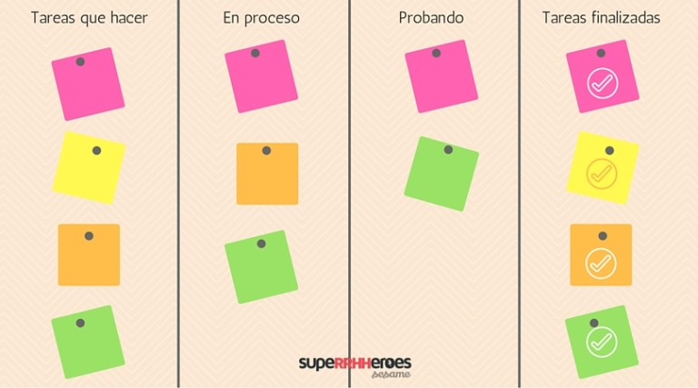
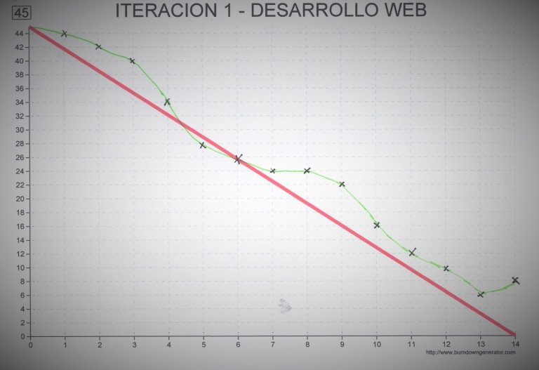

La metodología ágil surge como sustituto a los métodos clásicos de gestión. La flexibilidad, la calidad y la necesidad de entregar proyectos y productos en cortos espacios de tiempo son una prioridad. Todo ello ha facilitado el nacimiento de la metodología ágil o agile methodology.
Los procesos agile son idóneos para aquellas organizaciones que están a la última y reaccionan a las nuevas tendencias. Son muchos los métodos que se utilizan para aplicar las metodologías agile, pero antes de nada hablaremos de los beneficios derivados de la aplicación de agile methodology.
Beneficios de la metodología ágil o agile methodology
¡Aumento de la productividad!
Mejora la motivación e implicación del equipo. ¡Sí, sí, del equipo! Con el uso de la metodología ágil se permite a todo el equipo conocer el estado del proyecto en todo momento. Las ideas de todos los miembros se tienen en cuenta. Antes de tomar una decisión definitiva todo se negocia y valora por el equipo. Con esta técnica se fomenta el trabajo en equipo y por tanto aumenta la implicación de los miembros del mismo. Mayor velocidad y eficacia. Estas metodologías permiten hacer entregas parciales del producto, por lo que se puede entregar una versión funcional del producto en breve intervalo de tiempo. Mejora la calidad del producto. Las entregas parciales del producto o proyecto permiten detectar los fallos o errores que tenga, y aplicar soluciones antes de su comercialización definitiva. Pero no sólo hay beneficios para los empleados y la organización, los clientes también obtendrán ventajas por la aplicación de metodologías ágiles. La satisfacción de los clientes será mayor, pues estarán involucrados en cada etapa del proceso viendo la progresión del mismo y aportando sugerencias y opiniones.
Técnicas para aplicar la metodología ágil
Tableros Kanban
En primer lugar vamos a hablar sobre los Tableros Kanban. Es un concepto sencillo de aplicar y muy útil. Consiste en dividir un tablero en columnas que indican los estados por los que debe pasar un proyecto.
Lo más común es dividir el tablero en cuatro columnas. En la primer columna podemos poner “tareas que hacer” y en distintos post-it indicar las tareas, en la segunda columna deberán indicarse qué tareas están en proceso, en la tercera se incluirán las que están en fase de prueba y en la última columna todas las tareas finalizadas.
Los post-it se irán moviendo de izquierda a derecha en función de cómo progrese el proyecto. Pero no solo es válido ese movimiento. Si se detecta algún error, las tareas también podrán moverse hacia atrás hasta que este esté solventado. En la imagen se puede observar un ejemplo de cómo sería un Tablero Kanban.
El tablero Kanban no acaba aquí. Este tablero también introduce el concepto WIP (Work In Progress), que hace referencia a un número que se introduce al lado del título de cada tarea y que indica cuántas tareas, máximas o mínimas, pueden desarrollarse de forma simultánea en una misma etapa. Si alcanzamos el número “WIP” de una de las columnas…¡STOP!, no podremos seguir haciendo tareas hasta que no finalicemos las que hay en marcha. Además de ser una metodología útil y sencilla de aplicar, ¡el método Kanban dará color a la oficina!
Diagrama Burndown
El diagrama Burndown, también denominado diagrama de trabajo pendiente, permite conocer el tiempo que falta para terminar todas las tareas pendientes en un sprint.Son fáciles de diseñar , muy visuales para conocer cuánto tiempo falta para acabar y su mantenimiento no es costoso.
¿Cómo hacer un diagrama Burndown?
En primer lugar divide el trabajo en iteraciones o sprints, indicando la duración de cada una de ellas.A continuación debes hacer una estimación de las tareas a desarrollar en los días ideales.
Finalmente, acuerda qué funcionalidad va a desarrollar cada participante del equipo. Esto dependerá del número de participantes del equipo y de la duración del sprint.
Product Backlog: Conjunto de requisitos demoninados historias descritos en un lenguaje no técnico y priorizados por valor de negocio, o lo que es lo mismo, por retorno de inversión considerando su beneficio y coste. Los requisitos y prioridades se revisan y ajustan durante el curso del proyecto a intervalos regulares.
Sprint Planning: Reunión durante la cual el Product Owner presenta las historias del backlog por orden de prioridad. El equipo determina la cantidad de historias que puede comprometerse a completar en ese sprint, para en una segunda parte de la reunión, decidir y organizar cómo lo va a conseguir.
Sprint: Iteración de duración prefijada durante la cual el equipo trabaja para convertir las historias del Product Backlog a las que se ha comprometido, en una nueva versión del software totalmente operativo.
Sprint Backlog: Lista de las tareas necesarias para llevar a cabo las historias del sprint.
Daily sprint meeting: Reunión diaria de cómo máximo 15 min. en la que el equipo se sincroniza para trabajar de forma coordinada. Cada miembro comenta que hizo el día anterior, que hará hoy y si hay impedimentos.
Demo y retrospectiva: Reunión que se celebra al final del sprint y en la que el equipo presenta las historias conseguidas mediante una demonstración del producto. Posteriormente, en la retrospectiva, el equipo analiza qué se hizo bien, qué procesos serían mejorables y discute acerca de cómo perfeccionarlos.
RolesEn Scrum, el equipo se focaliza en construir software de calidad. La gestión de un proyecto Scrum se centra en definir cuáles son las características que debe tener el producto a construir (qué construir, qué no y en qué orden) y en vencer cualquier obstáculo que pudiera entorpecer la tarea del equipo de desarrollo.
El equipo Scrum está formado por los siguientes roles:
Scrum master: Persona que lidera al equipo guiándolo para que cumpla las reglas y procesos de la metodología. Gestiona la reducción de impedimentos del proyecto y trabaja con el Product Owner para maximizar el ROI.
Product owner (PO): Representante de lso accionistas y clientes que usan el software. Se focaliza en la parte de negocio y el es responsable del ROI del proyecto (entregar un valor superior al dinero invertido). Traslada la visión del proyecto al equipo, formaliza las prestaciones en historias a incorporar en el Product Backlog y las reprioriza de forma regular.
Team: Grupo de profesionales con los conocimientos técnicos necesarios y que desarrollan el proyecto de manera conjunta llevando a cabo las historias a las que se comprometen al inicio de cada sprint.